MoE ??? token ??????????????????????????????????????? token?????????????????????????????
理解 MoE 推理服务如何路由 token、批处理专家计算、把权重分布到多块 GPU，以及管理通信与负载不均衡所需的一切。内容覆盖专家并行、分组 GEMM、拓扑感知的放置、内存需求、推理优化，以及决定延迟与吞吐的各种取舍。
稠密 Transformer 对每个 token 都套用同一个前馈网络。批处理改变的是输入矩阵的维度，而不是哪些权重会被执行。
MoE 层把这个前馈网络换成多个专家。路由器会为每个 token 给这些专家打分。只有被选中的专家才为该 token 执行计算。
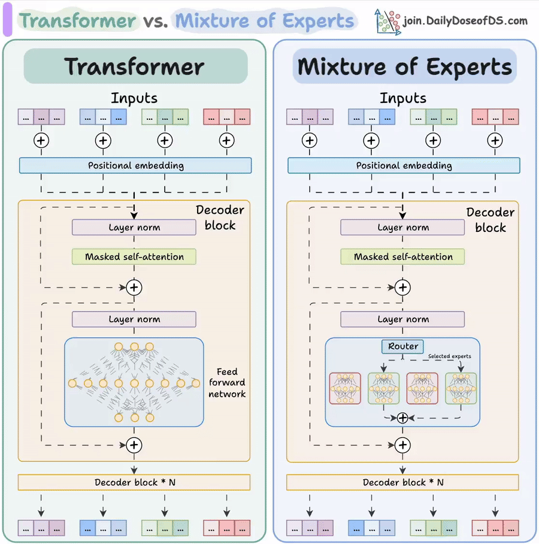
这样每个 token 消耗的专家计算量就降下来了。不过路由本身并不能决定下一个 token 需要哪些权重，所以推理服务仍然要为每一个可能被选中的专家留出位置。
Qwen3-30B-A3B 的模型卡写明：总参数 305 亿，激活参数 33 亿。每个 token 从 128 个路由专家中选 8 个。
服务器依然要提供完整的模型。它需要注意力权重、词嵌入、专家权重、临时缓冲区，以及不断增长的 KV 缓存。33 亿这个数字大致描述的是活跃计算量，它并不代表这次部署的内存占用，也不代表专家权重本身。
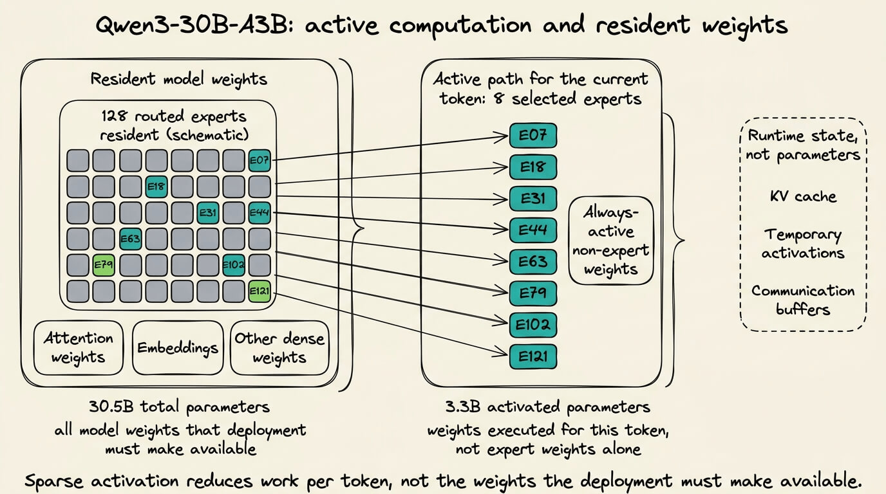
激活参数量估算的是一个 token 走过的执行路径。常驻参数量才决定这次部署需要多少权重内存。
顺着一个 token 在 MoE 推理服务里的路径走一遍：路由器怎么挑专家、运行时怎么把 token 拼成专家批次、本机内核怎么执行它们，以及激活值如何在多块 GPU 之间流动。
接着会讲专家放置、负载不均衡、容量上限、量化，以及那些用来判断瓶颈到底在计算、显存带宽还是互连流量的测量方法。
Transformer 层在做前馈计算之前先做注意力。注意力在 token 位置之间混合信息。前馈网络随后独立地变换每个 token 位置。
MoE 层把一个稠密前馈网络换成多个专家。每个专家本身就是一个独立的前馈网络。
注意力仍然要处理每一个 token。路由器只控制专家这一条分支。所以专家侧的稀疏激活并不会让注意力路径也变稀疏。
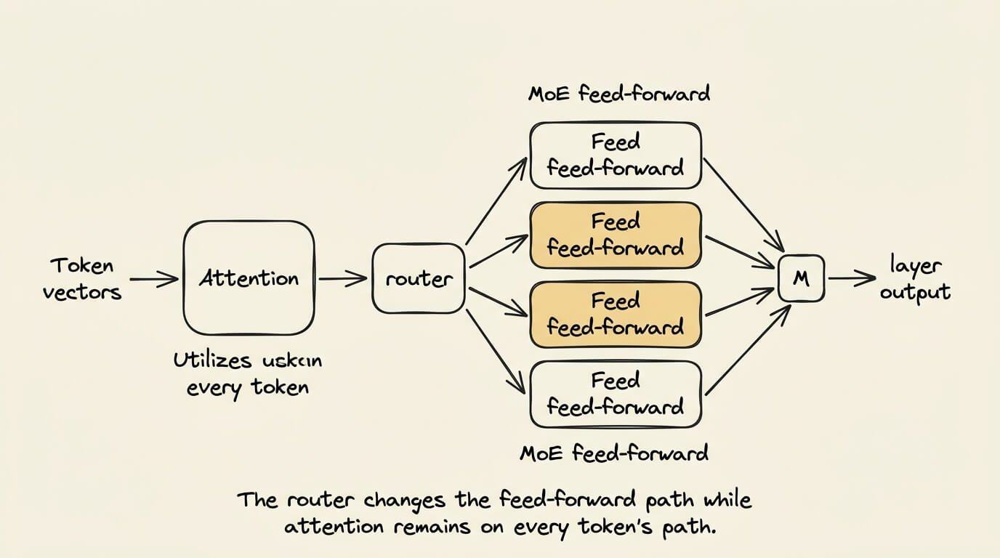
先看一个只有四个专家的玩具层。路由器会为某个 token 向量给每个专家打分，该层挑出得分最高的两个专家。
这两个专家各自独立处理同一个 token 向量，该层再把它们的输出合并起来。各自的贡献由模型自己的路由权重决定。
加权后的专家输出可以写成下面这样。
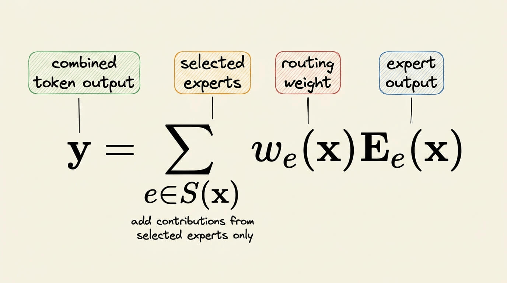
其中：
x 是这个 token 的输入向量。
S(x) 是它被选中的专家集合。
E_e 是专家 e，w_e(x) 是它的路由权重。
输出向量是 y。
求和只覆盖被选中的专家。每个专家都在变换同一个输入向量，它的路由权重在相加之前缩放该专家的贡献。
路由器挑出若干个专家函数，该层对它们的输出做加权求和。不同架构对这些权重采用不同的归一化规则。
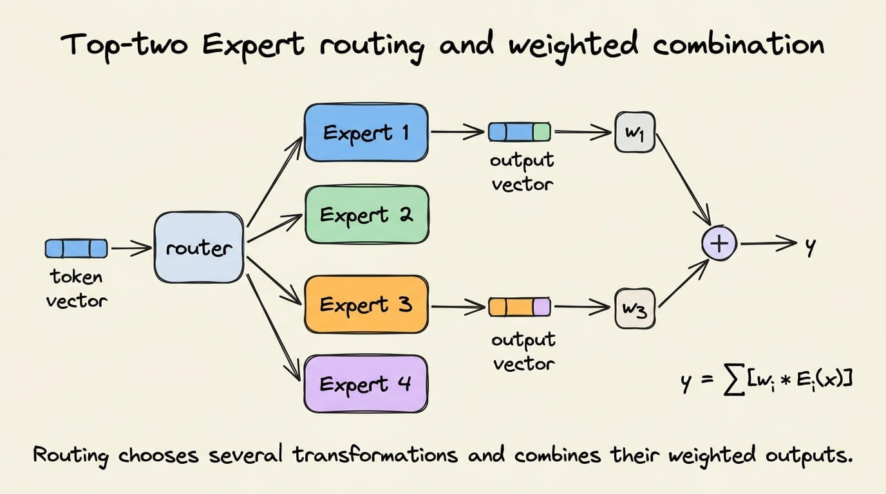
token 到专家的路由发生在每个 MoE 层内部。这和整个请求层面的模型路由不是一回事，后者会为整个请求挑一个 LLM。
为了读起来简单，这个玩具层用 top-two 路由。Qwen3-30B-A3B 则是每个 token 从 128 个专家里选 8 个。它的模型卡还写明共有 48 层。
有些架构里还有共享专家。这类专家不看路由器打分，每个 token 都要经过它们。DeepSeekMoE 就在路由专家之外另设了隔离的共享专家。
共享专家对每个 token 都执行，路由专家只在被选中时执行。只有设计上就带共享专家的模型才有这种划分。
不要假设每个模型都有共享专家。先去看它的架构和推理服务实现。
路由器改变了每个 MoE 层内部的前馈计算。批量推理因此要调度大量的 token 与专家配对，而每个配对的去向专家和矩阵大小都不一样。
路由器要为每个 token 做一次决策。GPU 没办法一次只高效地跑一个极小的专家运算，所以推理服务会把路由决策整理成更大的、按专家分组的矩阵。
假设四个 token 进入一个四专家、top-two 路由的层。路由器的选择是：
T1 选中 E1，权重 0.7；选中 E3，权重 0.3。
T2 选中 E1，权重 0.4；选中 E3，权重 0.6。
T3 选中 E1，权重 0.7；选中 E2，权重 0.3。
T4 选中 E2，权重 0.8；选中 E4，权重 0.2。
运行时手上现在有八个分配项，而不是四个。每个分配项包含三样东西：token 向量、被选中的专家、以及路由权重。
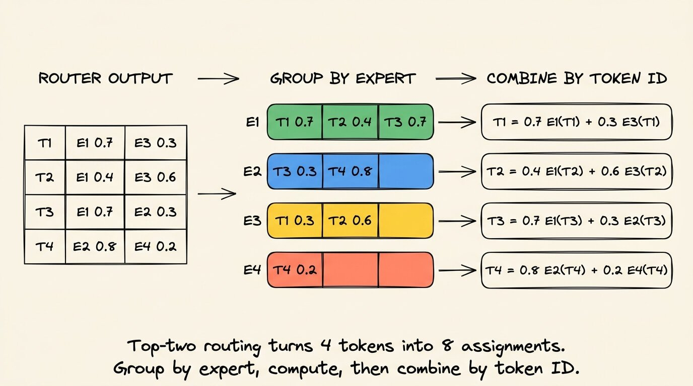
运行时按专家把这些分配项分组。E1 收到 T1、T2、T3；E2 收到 T3、T4；E3 收到 T1、T2；E4 收到 T4。这些分组分别变成三行、两行、两行、一行的矩阵。
每个专家处理自己的矩阵。运行时会在每一行旁边保留原始 token ID，用它记录每个结果该回到哪里。
T1 会从 E1 拿到一个结果，从 E3 拿到另一个结果。
运行时把它们分别乘以 0.7 和 0.3。
再把两份贡献相加，就得到 T1 最终的专家输出。
每个 token 都要走同样的合并步骤。
这个分组的步骤叫分发，返回的步骤叫合并，两者都在同一块 GPU 内完成。多块 GPU 会在它们之间再加一层网络传输。
一个专家批次统计的是分配项数量，而不是不同的源 token 数。用 top-two 路由时，每个 token 都会在专家矩阵里贡献两行。
预填充一次处理很多提示词 token，所以专家拿到的矩阵行数可以很多。矩阵越大，GPU 通常利用得越充分。
解码则为每个活跃请求新增一个 token。并发低的时候，某个专家可能只有一两行，为这么点活儿启动一次矩阵内核是在浪费 GPU 算力。
并发更高时，每一步产生的分配项更多。分组通用矩阵乘法，也就是分组 GEMM，能在一次启动里跑完多个专家矩阵。即使行数各不相同，它也能减少启动开销。
有些引擎会把专家矩阵填充到固定尺寸。固定形状让内核更容易调度，代价是要在没有 token 的填充行上白算一遍。
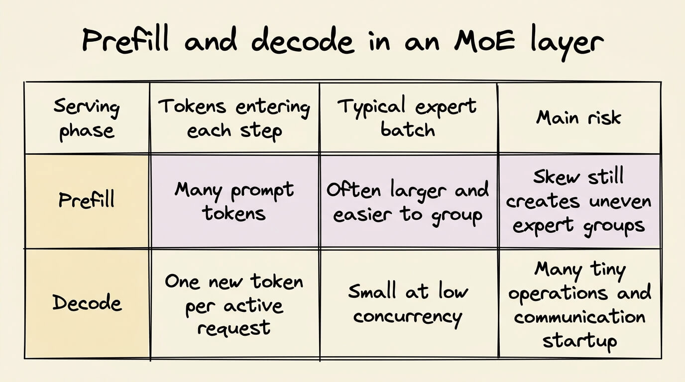
预填充和解码没有固定的性能画像。提示词长度和请求数量会改变它们的专家矩阵大小，隐藏层宽度和硬件则决定这些矩阵跑得有多高效。
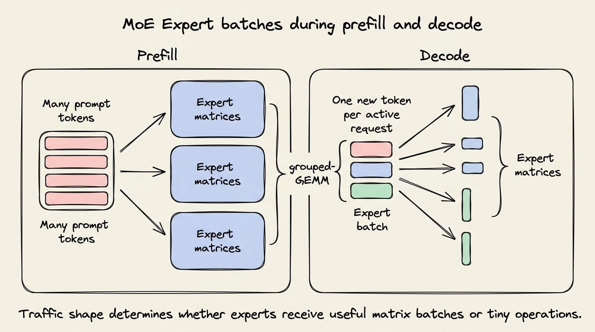
分组 GEMM 能把已有的专家工作打包成更少的启动次数，但它没法为没收到 token 的专家凭空造出工作。
小结：路由产生分配项，分发把它们整理成专家矩阵，合并把结果送回原来的 token。下一节跟着这些矩阵走一遍单块 GPU 里的流程。
MoE 层要做的事远不止专家矩阵乘法。它还要挑专家、重排 token 行、执行专家、再把 token 顺序还原回来，每个阶段都可能吃掉可观的时间。
路由器先为每个候选专家生成一个分数。top-k 操作留下被选中的专家索引及其权重。运行时随后重排 token 行，让每个专家拿到一块连续矩阵。
这个重排叫置换。它读取 token 向量，再按专家顺序写出去，同时记下一份逆映射供合并步骤使用。解码批次很小时，搬行花掉的时间和乘法本身差不多。
分组 GEMM 在一次内核启动里执行多个专家矩阵，这些矩阵的行数可以不同。分组只减少启动次数，不改变矩阵内容。
接下来专家做自己的激活和输出投影。运行时用逆映射把 token 顺序还原，应用路由权重，并把相同 token ID 的贡献累加起来。
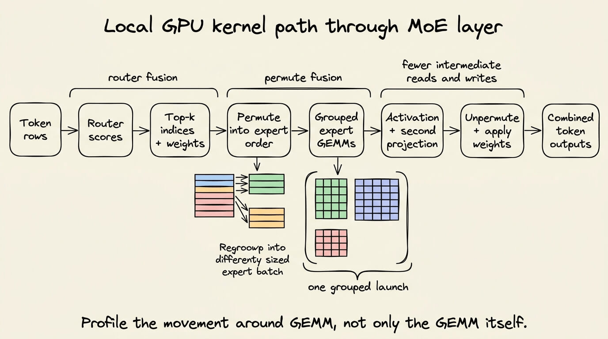
分组 GEMM 不改变分配项的数量，它只是用更少的启动次数执行已有的专家批次。
内核融合把原本要分开启动的算子合成一个。融合路径可以不必把中间激活值写回显存，因此既省启动开销，也省显存带宽。
融合是有条件的。一个内核可能只支持特定数据类型、批次形状或量化格式，不受支持的组合只能退回更模块化的路径。
激活量化又带来一个选择：运行时可以在分发之前先量化，发出去的就是更少的字节；也可以按更高精度分发，等专家计算之前再量化。前者省带宽，但把转换的工作提前了。
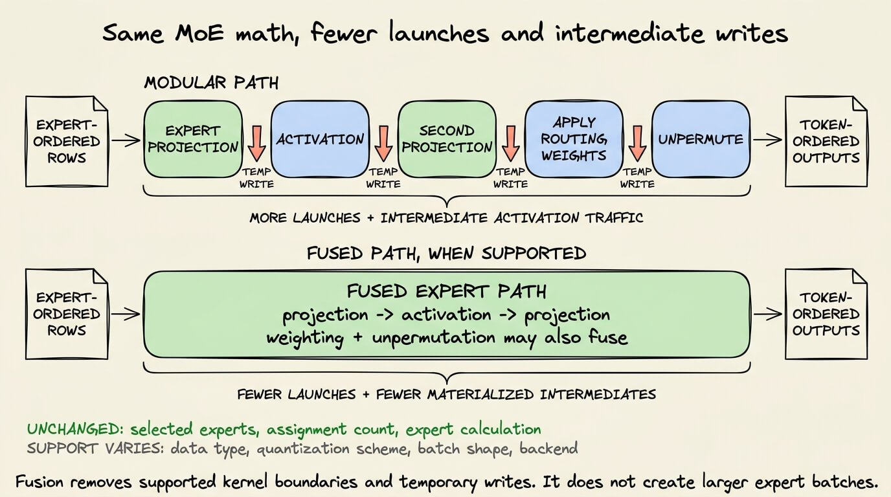
解码通常只给每个专家一个小矩阵，此时权重读取、搬行和内核启动会占大头。预填充给的行数通常更多，矩阵效率因此变得更要紧。
融合路径消除了算子之间那些受支持的边界。它不会增大专家批次，也不会改变路由器的选择或分配项数量。
把路由、置换、专家 GEMM 和合并分开来测。只测一个合并后的 MoE 总耗时，定位不出到底是哪一段慢。
小结：专家 GEMM 只是单机执行的一部分。批次很小时，搬运和启动的开销往往就露出来了。
MoE 部署涉及三种不同的参数量。总参数量描述检查点，激活参数量描述一个 token 的执行路径，常驻参数量描述推理服务当前可用的权重。
这几个数字不必一致。一个 token 只碰到一小部分专家，下一个 token 可能选到另一批。
全量常驻的部署要把每个可选的专家都留在它的 GPU 上，此外还要存注意力、词嵌入、归一化和输出权重。稀疏路由并不会让其中任何一项权重消失。
把 Qwen3-30B-A3B 的 305 亿参数按每个 2 字节存下来，光权重就需要大约 610 亿字节，也就是 61 GB，按二进制算约合 56.8 GiB。
下面的表达式给出权重存储的下界。
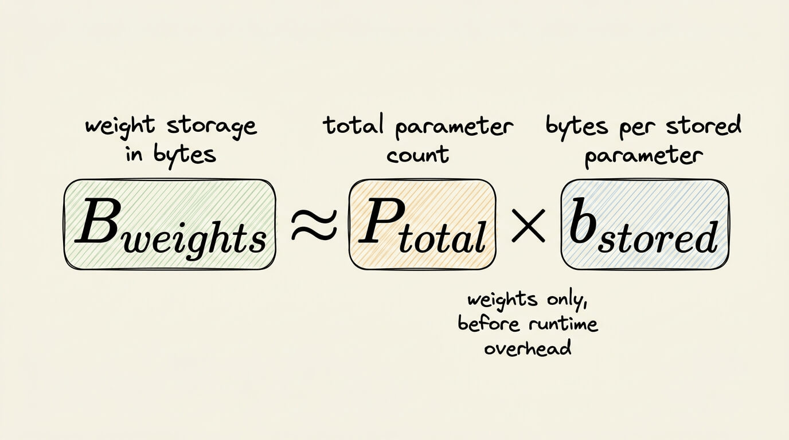
B(weights) 是存储权重所占的字节数。
P 是总参数量。
B(stored) 是每个被存储的参数占用的字节数。
这个表达式把参数量乘以每参数字节数。代入 Qwen 的数字，得到 610 亿字节。按十进制换算成 GB 就是除以十亿。这个结果只覆盖权重。
部署还需要临时的激活值和通信缓冲区，内存分配器也要预留额外空间，而 KV 缓存要为活跃序列保存注意力状态。这些都没有算进那 61 GB 里。
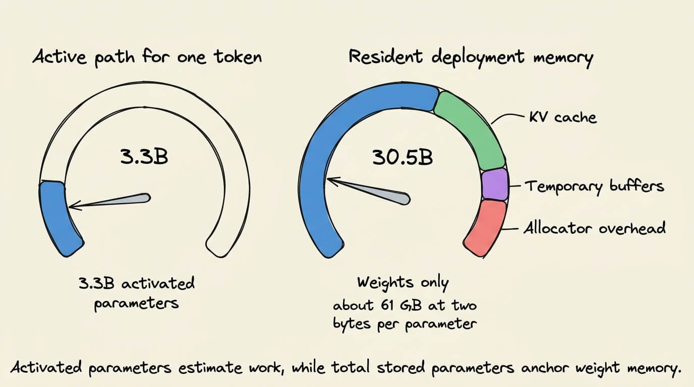
做这个估算时绝不能用 33 亿去替换 305 亿。激活参数量决定不了检查点里存了多少字节的权重。
权重量化让每个参数用更少的字节存储，权重分片把权重摊到多块 GPU 上。两者都不改变检查点里有多少参数。
稀疏激活减少了专家计算，却不减少权重的总存储。即便活跃 FLOPs 不算大，模型仍然可能需要权重分片。
专家卸载把一部分专家留在 CPU 内存里。路由选中它时，运行时再把它搬到某块 GPU 上。这省下了显存，代价是多了一条更慢的搬运路径。
某个专家不在显存里时，它的权重搬运会让解码停在原地。同一个专家被反复选中时，缓存能帮上忙。只有未来的选择可预测时，预取才有意义。
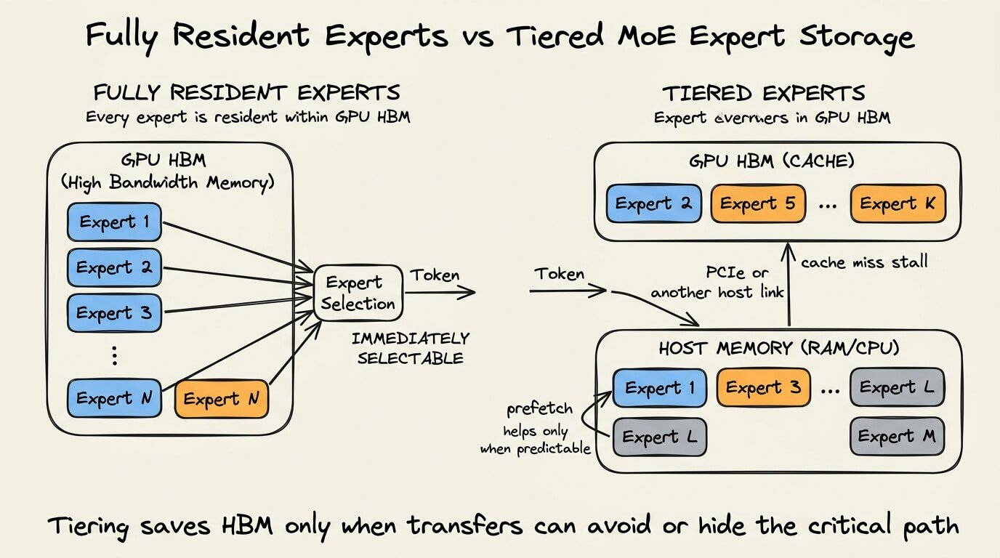
这些数字并不隐含一个固定的 GPU 数量。精度、分片、预留内存和 KV 容量都会改变答案。
小结：激活参数量估算计算量，常驻参数量决定权重内存。分片通过摊开权重解决容量问题，但被路由到的激活值从此要在 GPU 之间来回走。
专家并行把不同的专家分配到不同的 GPU 上。设想四个专家、两块 GPU：GPU A 持有 E1 和 E2，GPU B 持有 E3 和 E4。
一个 token 从 GPU A 出发，选中了 E1 和 E3。它的 E1 分配项留在 GPU A，E3 分配项必须走到 GPU B。
网络记录里带着 token 向量和路由元数据。元数据标明这个 token、目标专家、来源 GPU 和路由权重。目标端要靠这些字段才能把结果正确送回去。
每块 GPU 把本地的和收到的分配项按专家分组，为每个活跃的本地专家执行一个矩阵。远程结果随后走回各自的来源 GPU。
来源 GPU 用存下来的标识恢复 token 顺序，应用每个路由权重，把匹配的贡献相加，至此完成合并。
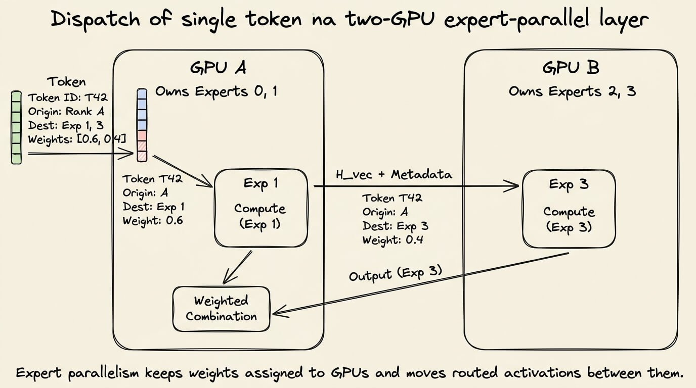
GPU 数量一多，每块 GPU 可能同时向多个对端发送分配项，这就形成了 all-to-all 的通信模式。合并则在计算完成后把专家结果发回去。
专家权重通常留在被分配到的 GPU 上。网络搬的是 token 激活值和元数据，而不是专家权重。填充和临时缓冲区会增加实际传输的字节数。
下面这个上界用来估算分发阶段的激活负载。
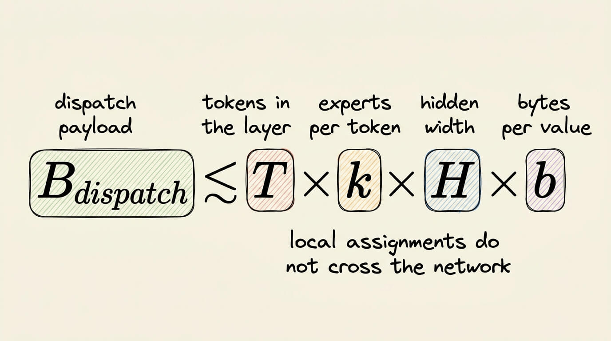
B(dispatch) 是分发出去的激活负载。
T 是进入这个 MoE 层的 token 数。
K 是每个 token 选中的专家数。
H 是隐藏层宽度。
最后，b 是每个激活值占用的字节数。
这个乘积按每个分配项算一个完整的隐藏向量，是不考虑局部性时的上界。留在同一块 GPU 上的分配项不消耗网络带宽。
真实流量取决于有多少分配项是远程的。元数据和填充会增加字节数，专家副本能让一部分分配项留在本地，合并还会在返回方向上再加一份流量。
这个估算只覆盖激活负载，不含协议开销；在没有拓扑和消息大小测量的情况下，也预测不了延迟。
每个 MoE 层都要重复一次这样的交换。很小的分发延迟在整个模型里会累积起来。有可独立计算的任务时，重叠能把一部分延迟藏起来。
DeepEP 为大批次和小批次提供了分离的通信路径。它的吞吐路径面向较大的传输量，低延迟路径面向启动时间更关键的解码步骤。
内核带宽不等于端到端的服务速度。一个完整请求还包括注意力、调度、采样、缓存操作，以及模型里的每一层。
小结：专家并行让权重原地不动，只搬运分配项。它提升了分布式的权重容量，代价是反复出现的激活流量。
并不是每条 GPU 链路的成本都一样。同一台服务器内的 GPU 可能走 NVLink 或 NVSwitch，不同服务器的 GPU 之间可能走 InfiniBand 或以太网。
跨服务器传输通常比服务器内传输更贵。专家放置决定每个专家存在哪块 GPU 上，这个选择决定了路由有多频繁地跨过较慢的链路。
一种常见布局是把频繁出现的专家流量留在 NVLink 域内，另一种并行布局则把各层分散到多台服务器。哪种边界更合适取决于模型和集群。
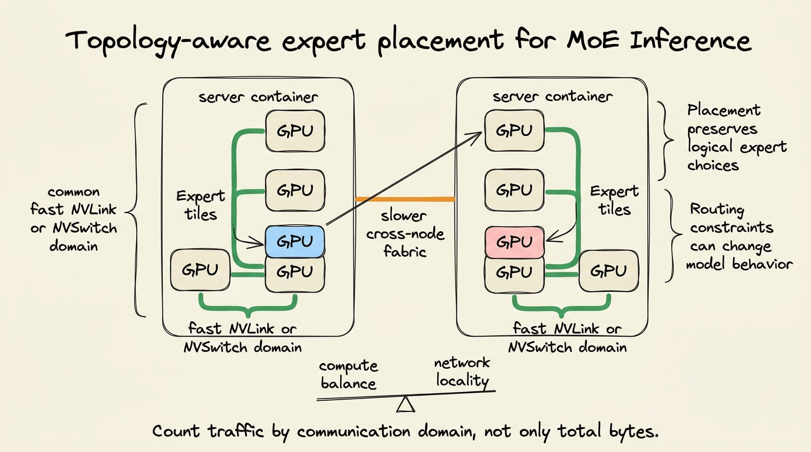
放置在不改变路由器输出的前提下改变物理去向。经常被选中的专家可以挪到更靠近它 token 来源的位置，运行时也可以为一个逻辑专家建几个物理副本。
路由约束是另一回事，因为它限制的是模型的选择。DeepSeek-V3 用节点受限路由：每个 token 只能到达有限几个节点上的专家。这条规则属于训练出来的架构。
节点受限路由是那个模型训练架构的一部分。训练之后再补上类似的限制，可能会改变被选中的专家和模型质量。
做放置需要路由轨迹和拓扑测量。路由轨迹显示哪些专家接到了工作，拓扑测量显示每个目的地的成本。只看专家热度是看不出链路成本的。
把热门专家放在一起可能减少网络流量，也可能让某台服务器过载。分散开会平衡计算，但可能增加跨服务器流量。只有在还有空闲显存时，副本才有帮助。
按通信域分别测字节数和时间。一个集群级的流量计数器分不出廉价的节点内搬运和昂贵的跨节点搬运。还要记录是哪些专家对产生了这些流量，因为放置需要有稳定的模式才能利用。
小结：放置想把频繁流量留在快速链路上，同时又必须把工作摊到多块 GPU 上。路由轨迹能说明某种布局能否同时满足这两个目标。
三种并行布局切分的是不同种类的工作。张量并行把一个矩阵运算拆到多块 GPU 上；专家并行把不同的专家分给不同的 GPU；数据并行把不同的请求交给不同的副本。
张量并行把一个权重矩阵切成若干分片，每块 GPU 算出部分结果，GPU 之间再交换这些部分结果把这一层收尾。
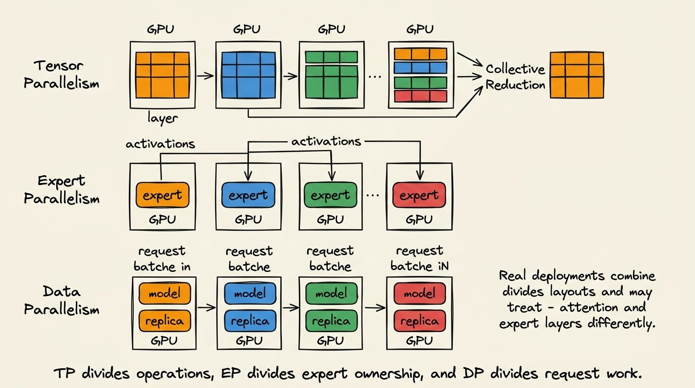
专家并行分配的是整个专家或专家的分片。token 的分配项向被选中的专家移动，所以它的流量取决于路由和放置。
数据并行把不同请求送到不同副本。有些引擎在数据并行组内还会复制注意力组件，同时把专家铺到更大的组上。
真实部署会把几种布局组合起来。注意力层和专家层可以用不同的 GPU 组，单靠一个并行标签描述不了整个部署。
设想张量并行度为 2、数据并行度为 4。注意力跑在四个各含两块 GPU 的组里，专家层则可以把全部八块 GPU 当成一个专家并行组来用。
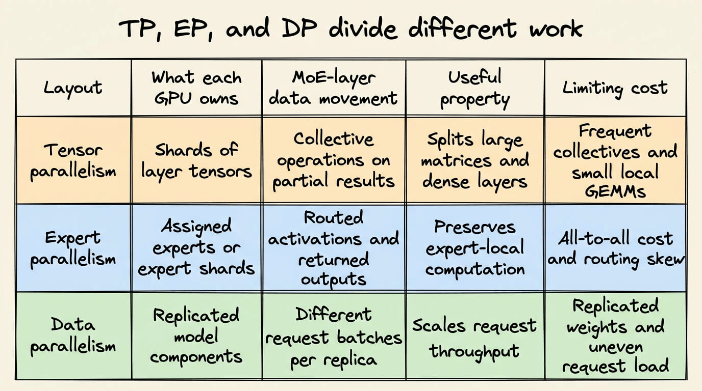
真实部署会把这些布局组合起来。注意力层和专家层可以用不同的 rank 组，单靠一个标签很少能描述整个模型。
vLLM 的专家并行部署文档记录了这种混合做法：开启专家并行后，EP 组大小等于张量并行度乘以数据并行度；当 TP 大于 1 时，注意力在每个数据并行组内部使用张量并行。
举例来说，TP 等于 2、DP 等于 4，就形成四个注意力组，每个注意力组横跨两个 rank；专家层则可以用一个八 rank 的 EP 组。
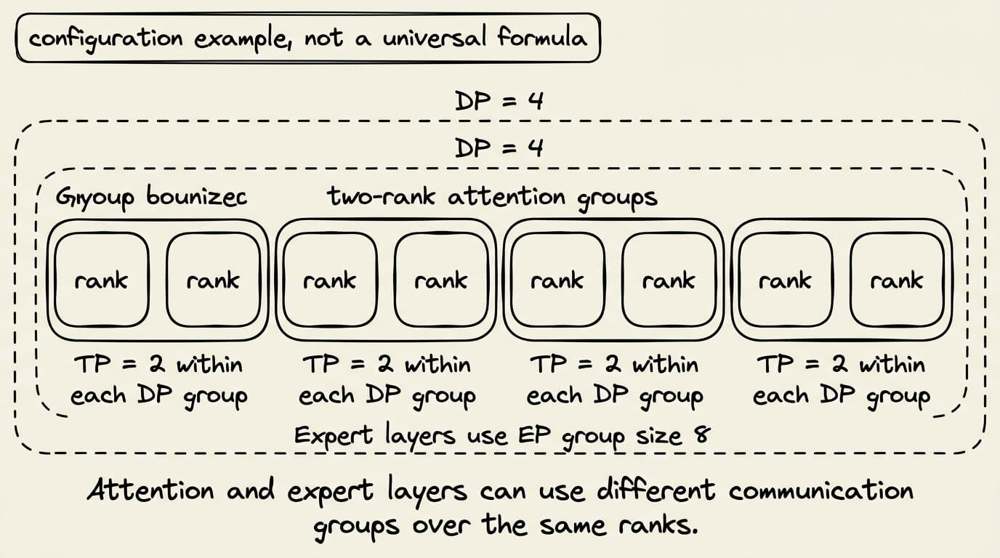
TP2 配 DP4 只是 vLLM 的一个配置示例，其他引擎可能定义不同的通信组。
张量并行在每个矩阵运算内部通信，专家并行搬运被路由的激活值，数据并行要为复制的组件付出内存。每种布局付的代价都不一样。
并发很低时，专家并行的传输会变得低效；互连较弱也会造成同样的结果。当集合通信占主导时，张量并行同样会吃力。
小结：张量并行切分运算，专家并行切分专家的归属，数据并行切分请求。哪种组合有用，取决于内存、流量和互连速度。
路由几乎不可能把工作分得绝对均匀。假设某个专家接到了一半的分配项，它所在的 GPU 就不得不算一个比别人更大的矩阵。
别的 GPU 可能提前算完然后干等。只要还有一份必需的贡献没返回，这一层就不算结束，所以参与计算的最慢那块 GPU 决定了这一步的延迟。
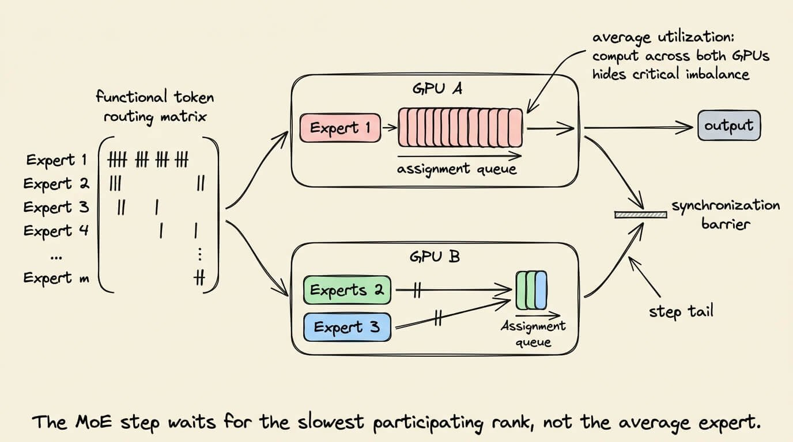
训练可以在大规模数据集上鼓励均衡路由，但某一个线上批次仍可能偏斜。语种和请求构成的差异，都会改变哪些专家被选中。
专家不均衡发生在同一个模型副本内部，请求不均衡发生在拿到不同工作量的副本之间。这两类问题的测量方法和解法都不一样。
按天看很均匀的直方图会掩盖掉单个步骤的慢。要在服务步骤这个粒度上测分配项数量和耗时。
记录每一个服务步骤的分配项数量，同时记录分发时间、专家执行时间、合并时间和 GPU 空闲时间。这些指标能看出是某个专家还是某条链路决定了尾部延迟。
放置可以把经常被一起选中的专家分开，也可以把热门专家挪到不那么忙的 GPU 上。这些调整不会改变路由器的决策。
副本为一个逻辑专家造出几个物理拷贝。路由器选的还是同一个逻辑专家，运行时把分配项发给其中一个可用的拷贝。
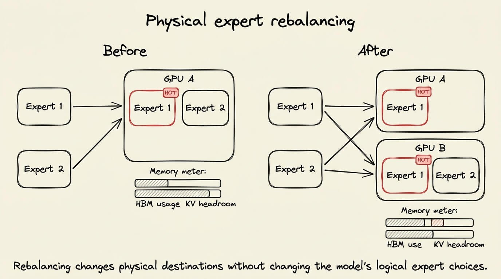
副本要占显存，留给 KV 缓存的空间就更少。搬动专家同样要消耗带宽。短促的流量尖峰可能在再平衡完成之前就结束了。
有些运行时会用近期的负载测量来再平衡专家，也可能支持冗余的专家副本。这两种机制都需要足够的内存，以及一个足够稳定、能从中学习近期历史的工作负载。
再平衡改变的是物理去向，它不改变模型选中的是哪些逻辑专家，也不改变它们本该有的输出。
平均利用率解释不了 MoE 的尾延迟。要逐步、逐块 GPU 地测。放置和副本能压低尾部，但要付出内存和控制带宽的代价。
MoE 的优化分两类。一类只改变执行方式，另一类会改变数值，或者改变实际被选中的计算。
融合、分组 GEMM、放置和通信重叠保留了逻辑上的专家选择，改变的是运行时干活的方式。仍可能出现很小的浮点差异。
量化改变存储的权重或传输的激活值。它能降低内存占用和网络流量，也会引入数值误差，因此必须在目标负载上测质量。
减小 top-k 会改变实际执行的专家集合，把一部分专家贡献从加权和里移走。对剩下的权重重新归一化，又会再次改变结果。
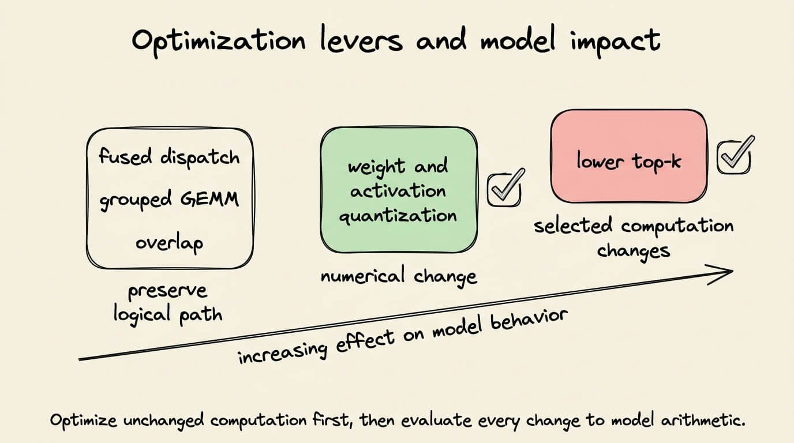
假设模型通常选八个专家，而某个运行时只执行四个。输出里包含的专家函数变少了，重新归一化还会改变它们合并后的尺度。
论文 Training-Free Halving of Activated Experts 专门研究了这一区别：它执行更少的专家，同时用一个更大的参考集合来计算归一化质量。
在 Qwen3.6-35B-A3B 上，按标准做法把八个专家减到四个会掉 4.65 个 MMLU 点；改用调整后的参考质量，实测损失降到 0.35 点。论文报告该设置下被路由专家计算量减半。
同一方法在 Qwen3.5-397B-A17B 上把十个专家减到五个时掉了 0.55 个 MMLU 点。作者还发现，困惑度和任务准确率偏好的设置并不相同。
这些是针对特定检查点和评测的研究结果，它们并没有确立一条把 top-k 减半的通用规则。
专家并行改变的是被选中的计算在哪里跑，降低 top-k 改变的是哪些计算会被跑。两者不是等价的优化。
容量上限同样要谨慎对待。有些训练系统会限制分配给某个专家的 token 数，某些运行时也可能实现推理侧的限制。
专家忙的时候，MoE 推理并不会自动丢弃 token。容量规则或丢弃规则属于具体的模型或运行时，在假设它存在之前先去看实现。
先优化那些不改变计算的部分。把量化和 top-k 的改动当成模型变更，它们都需要质量测试。
执行层的改动需要性能测试，量化需要性能和质量测试，top-k 的改动除了这些还需要仔细比对输出。
有用的基准测试一次只改一个服务决策。检查点、精度、提示词、输出上限和请求到达方式都保持不变，然后只改并行布局或内核路径。
从能装下该模型的最小布局开始，接着加一个同服务器的布局。只有在测完这些基线之后，再去测跨服务器的专家并行。
内存容量可能让一个或多个配置根本装不下模型，后端支持范围也可能排除掉某个内核或通信布局。
低并发和高并发都要测，短提示词和长提示词也都要用。这样才能把小型的解码矩阵和提示词密集的预填充工作区分开。
记录预填充和输出吞吐，测首 token 延迟和每个输出 token 的耗时，再记录 token 间延迟和 p95 请求延迟。尾部测量能暴露由某一块过热 GPU 造成的延迟。
GPU 层面的测量能解释这些请求指标。按网络域记录字节数，同时记录分配项数量、专家耗时和空闲时间。把路由、置换、分发、GEMM、合并和反置换拆开。另外还要记录常驻权重和剩余的 KV 容量。
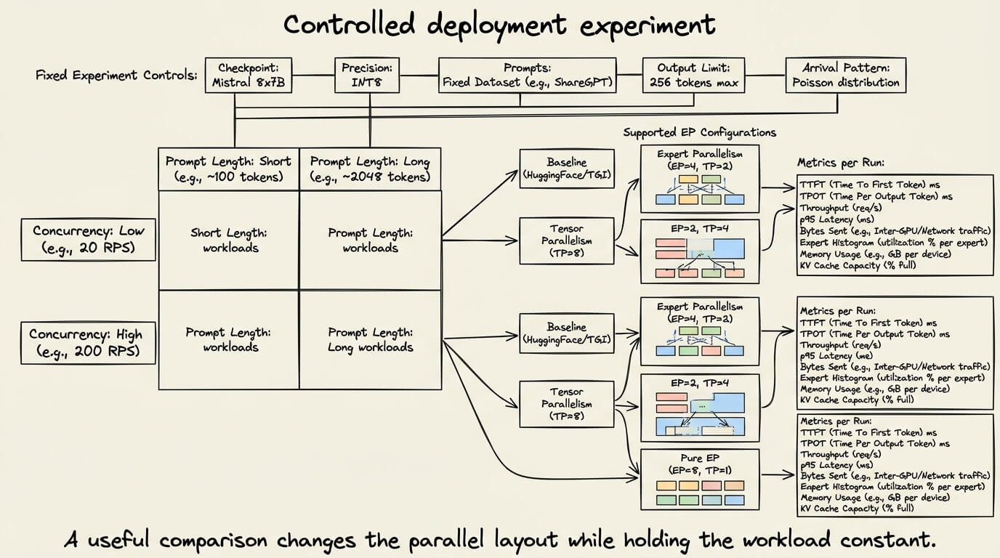
逐个阶段单独解读。分发时间高，说明问题在拓扑、局部性或消息大小；某块 GPU 持续偏慢，说明路由偏斜或放置不佳。
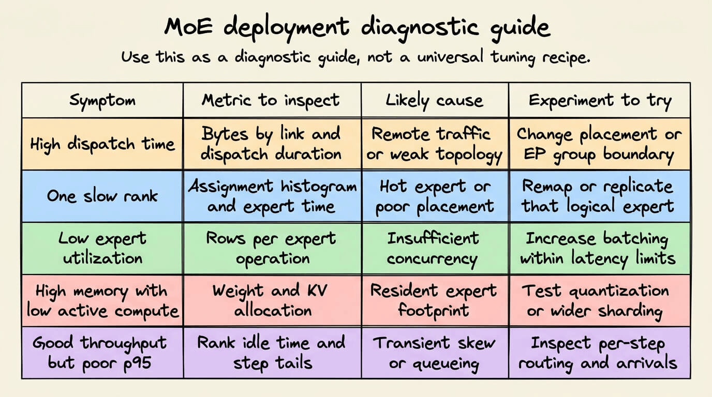
诊断表把常见症状映射到初步该测的指标。硬件拓扑和后端行为还可能带来别的原因。
内存占用高而专家计算量低，说明是权重容量问题。留给 KV 缓存的显存很少，印证了同一个瓶颈。提高并发可能改善矩阵尺寸，同时让缓存压力更大。
小结：比较完全相同的请求轨迹，一次只改一个变量，把内存、计算和通信分开来测。测得的最大开销决定下一个实验该做什么。
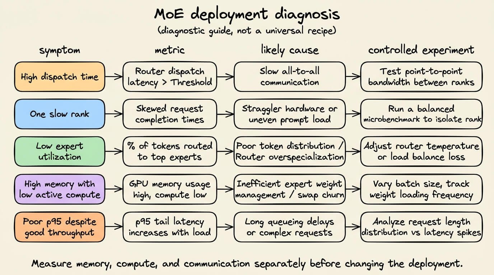
Qwen3-30B-A3B 的总参数是 305 亿，激活参数 33 亿。总参数量决定权重存储，激活参数量估算每个 token 的执行路径。
一个 MoE 服务步骤包括路由、token 置换、分发、分组专家计算、合并和反置换。多 GPU 部署还要再加上通信域、专家放置和 rank 级负载不均衡。
按这个顺序验证部署：先确认权重和 KV 缓存容量，接着给 MoE 路径的每个阶段做性能分析，再按通信域测分配项偏斜和字节数，最后把放置、内核、量化或 top-k 的改动拿同一个请求轨迹来比。
放置和内核的改动针对运行时开销，量化改变数值，top-k 改变实际执行的专家集合。把这些实验分开做，性能收益和模型质量的变化才能各自归因。
只要把三个量分开看，MoE 推理就好诊断了：部署必须存下模型权重、执行被选中的专家、搬运被路由的激活。在改服务布局之前，先分别测量这三件事。
轮到你了：在你自己的部署里，你会先去查内存、专家计算，还是通信？
参考：https://x.com/_avichawla/status/2100876555409039605